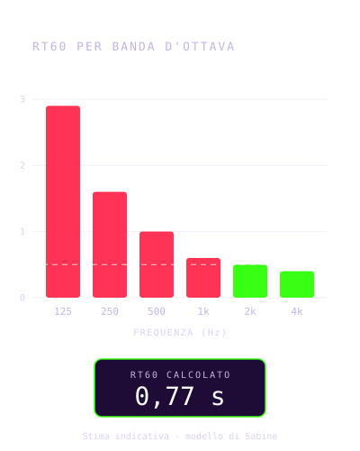
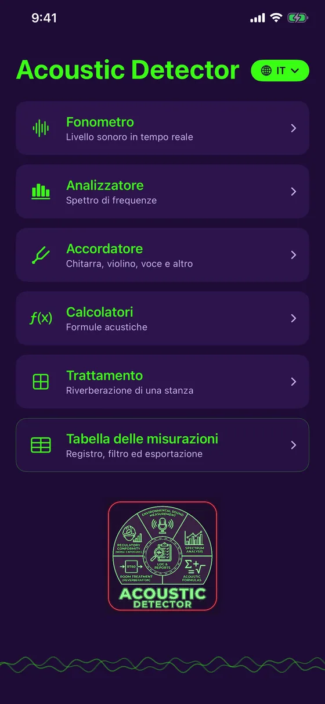
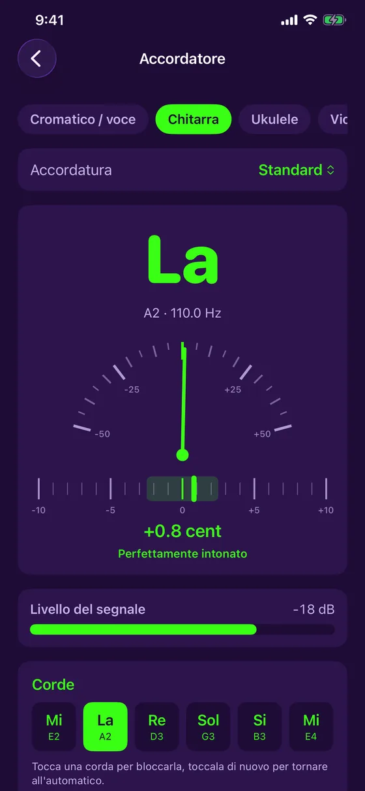
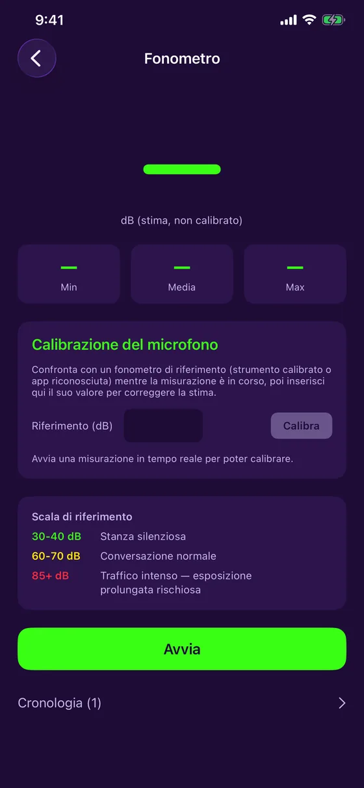
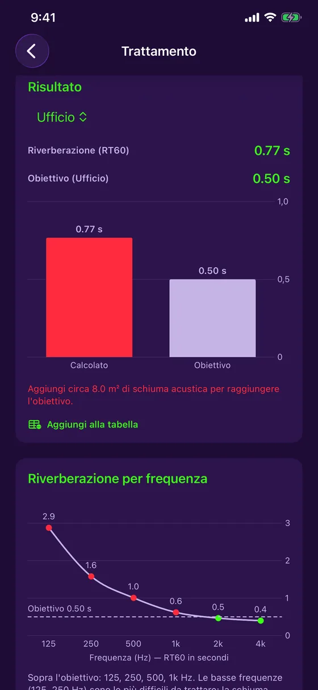
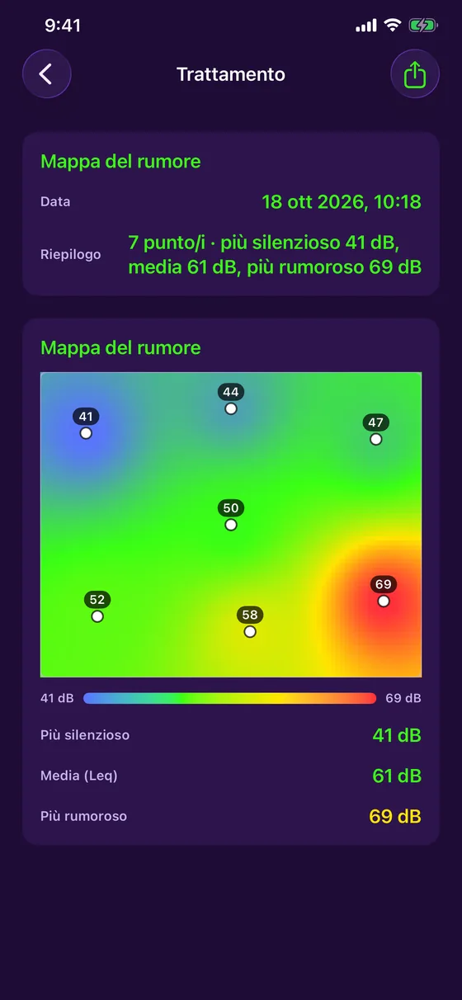
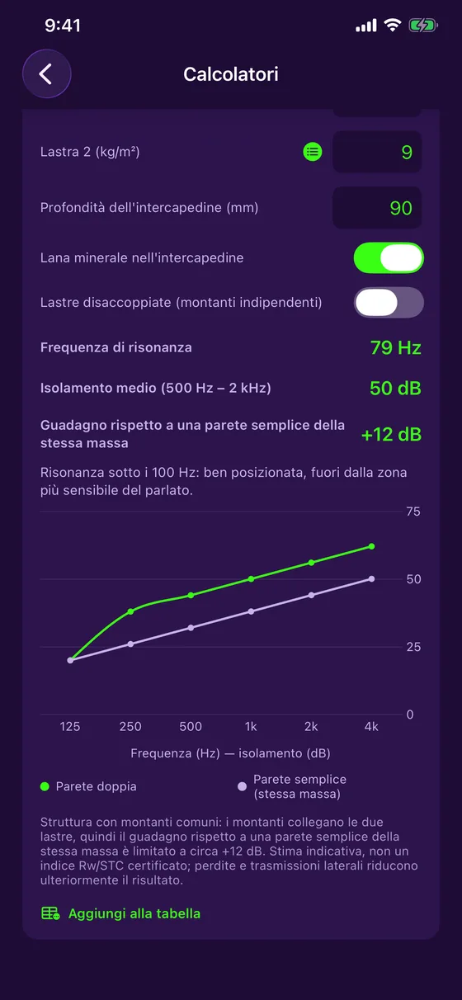
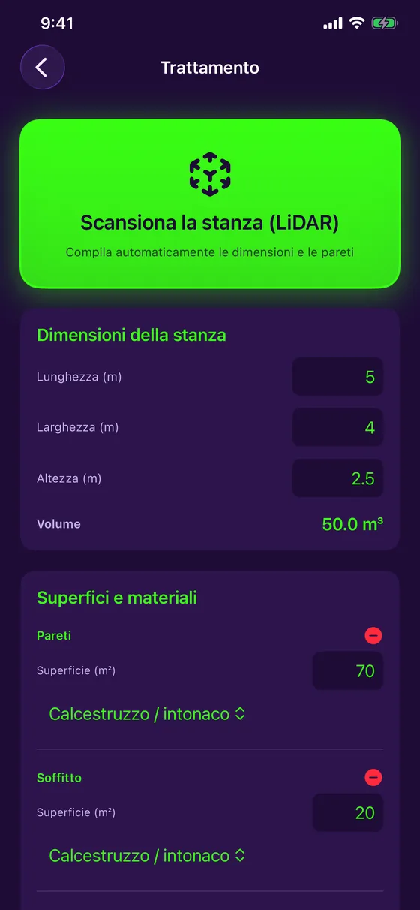
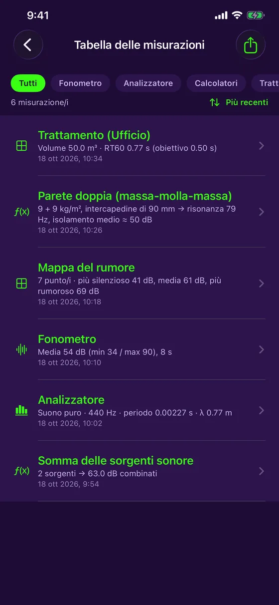

Misura del suono e trattamento acustico
Ascolta. Analizza. Correggi.
Acoustic Detector trasforma il tuo iPhone in uno strumento di acustica. Misura il rumore, analizza lo spettro, scansiona una stanza con il LiDAR e scopri dove risuona e quanta schiuma acustica aggiungere. Gratis, 100 % offline, in 7 lingue.

Versione 1.4.1: un accordatore gratuito, più stabile e preciso
Acoustic Detector include un accordatore gratuito per chitarra, ukulele, violino e altro, e ora parla italiano, francese, inglese, spagnolo, tedesco, portoghese e giapponese.
- Accordatore gratuito: chitarra (5 accordature), ukulele (anche Sol grave e baritono), violino, viola, violoncello, mandolino, banjo e modalità cromatica per la voce
- Versione 1.4.1: lettura più stabile che ignora le misure anomale, ago più preciso, indicatore del livello del segnale
- Note in Do Re Mi o in C D E secondo la lingua, e una vibrazione quando è intonato
- 7 lingue, selezionabili dal menu principale
- RT60 per banda d'ottava, da 125 Hz a 4 kHz, rispetto al tuo obiettivo
- Mappa del rumore: misura in più punti e ottieni una mappa di calore
- Doppia parete: frequenza di risonanza e isolamento per frequenza
- L'app è gratuita: fonometro, analizzatore, accordatore, tabella delle misure ed esportazione PDF inclusi; Trattamento e Calcolatori con un acquisto singolo
Versione 1.4.1 disponibile sull'App Store.
Uno strumento indicativo, presentato con onestà. Il microfono dell'iPhone non è uno strumento certificato: i valori mostrati sono stime, chiaramente indicate come tali, con una calibrazione manuale facoltativa per affinare la precisione. Acoustic Detector non sostituisce uno strumento calibrato per la conformità normativa ufficiale.
Cosa fa Acoustic Detector
Un solo dispositivo per misurare e correggere
Fonometro in tempo reale
Livello in dB in tempo reale, con minimo, media e massimo, calibrazione del microfono e storico a colori.
Analizzatore di spettro
Analisi delle frequenze in tempo reale, con rilevamento del tono puro: frequenza, periodo e lunghezza d'onda.
Trattamento di una stanza
Il tempo di riverbero (RT60) rispetto all'obiettivo del tuo uso, e la quantità di schiuma acustica da aggiungere.
Scansione LiDAR
Su iPhone Pro, passa lo sguardo sulla stanza: dimensioni e superficie di ogni parete si compilano da sole.
Mappa del rumore
Misura il livello in più punti e individua le zone calme e rumorose su una mappa di calore.
Accordatore
Chitarra, ukulele, violino, viola, violoncello, mandolino, banjo, o qualsiasi nota e la tua voce: ago e cent in tempo reale.
Calcolatori
Somma di sorgenti sonore, pressione sonora, frequenza e lunghezza d'onda, e calcolo della doppia parete.
Anteprima
Sobrio, preciso, pronto per il lavoro sul campo








Per chi
Dal cantiere allo studio
Imprese e tecnici
Misura il rumore di un luogo, verifica una parete divisoria, stima il trattamento di una stanza prima di fare un preventivo.
Studi, musicisti, audio
Calcola il riverbero di una sala, individua i bassi problematici, stima la schiuma da aggiungere e accorda i tuoi strumenti.
Casa e ufficio
Home cinema, ufficio in casa, sala riunioni: scopri dove risuona e cosa fare.
Prezzo
Gratis, con un acquisto singolo facoltativo
Gratis
- Fonometro in tempo reale e calibrazione
- Analizzatore di spettro
- Accordatore (chitarra, violino, voce e altro)
- Tabella delle misure
- Esportazione PDF con grafici
Completo
- Tutto il gratuito
- Trattamento: RT60, assorbimento, scansione LiDAR, mappa del rumore
- Calcolatori: sorgenti, pressione, onde, doppia parete
- Nessun abbonamento
Il prezzo è mostrato dall'App Store in base al tuo paese. Se hai acquistato l'app prima che diventasse gratuita, tutto resta sbloccato automaticamente.
Pronto ad ascoltare la tua stanza?
Acoustic Detector è disponibile sull'App Store, per iPhone. Gratis, con un acquisto singolo facoltativo.
Scarica dall'App Store